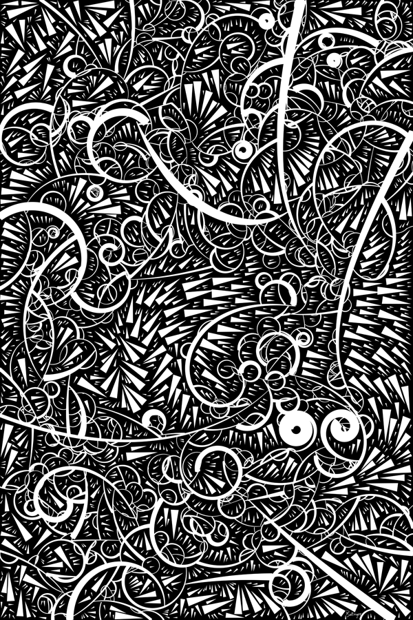
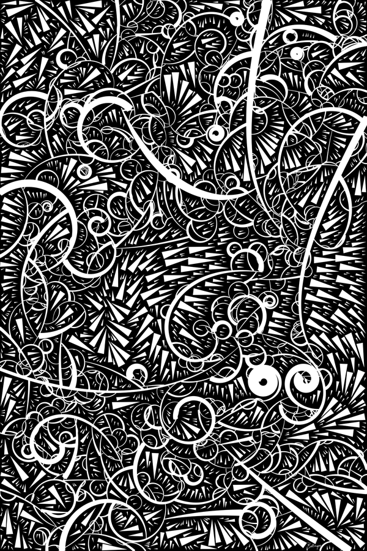

Jean Arp - Collage with Squares Arranged According to the Laws of Chance - 1917

James Paterson (Presstube) - Page 0 (Detail) - 2004

Joshua Davis (Praystation) - Various


Jared Tarbell (Complexification) - Substrate and Bubble Chamber - 2003

 complexification
substrate
bubble chamber
complexification
substrate
bubble chamber
Dave Bollinger
 
Photostream

Photostream
JK Keller - Echo #12 - 2009

Laurie Waxman (Parsons 2016) - Alphabet Iterations - 2015

Brand New School - Adobe Mural - c. 2007

Justin Bakse - Markov Map and Untitled - c. 2014